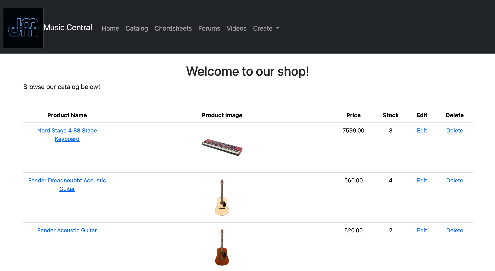
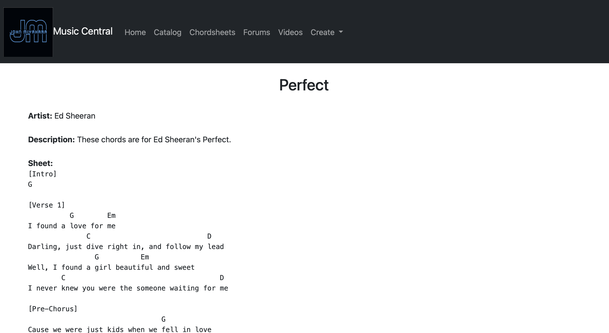

Promptr
For my Final Year Project in Republic Polytechnic, my team created Promptr, an AI prompt engineering trainer
In this website, users can practice creating effective prompts for AI models, learn best practices, and impprove their prompt engineering skills through gamified AI generation prompts with assesment techniques utilizing open-source AI from Hugging Face. I was in charge of Promptr's API integration and testing, along with some of the front-end programming.


